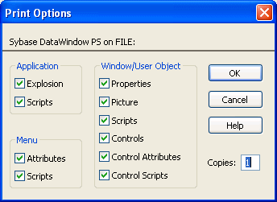

You can generate three types of reports from the Library painter:
The search results report contains the matching-entries information that PowerBuilder displays after it completes a search, described in "Searching targets, libraries, and objects". The other two types of reports are described in this section.
Library entry reports provide information about selected entries in the current target. You can use these reports to get printed documentation about the objects you have created in your target.
 To create library entry reports:
To create library entry reports:
Select the library entries you want information about in the List view.
Select Entry>Library Item>Print from the menu bar, or select Print from the pop-up menu.
The Print Options dialog box displays.

If you have selected the Application object or one or more menus, windows, or user objects to report on, select the information you want printed for each of these object types.
For example, if you want all properties for selected windows to appear in the report, make sure the Properties box is checked in the Window/User Object group box.
 The settings are saved PowerBuilder records these settings in the Library section
of the PowerBuilder initialization file.
The settings are saved PowerBuilder records these settings in the Library section
of the PowerBuilder initialization file.
Click OK.
PowerBuilder generates the selected reports and sends them to the printer specified in Printer Setup in the File menu.
The library directory report lists all entries in a selected library in your workspace, showing the following information for all objects in the library, ordered by object type:
 To create the library directory report:
To create the library directory report:
Select the library that you want the report for.
The library must be in your current workspace.
Select Entry>Library>Print Directory from the menu bar, or select Print Directory from the pop-up menu.
PowerBuilder sends the library directory report to the printer specified under File>Printer Setup in the menu bar.
This part describes how to code your application. It covers the basics of the PowerScript language, how to use the Script view, and how to create functions, structures, and user events to make your code more powerful and easier to maintain.